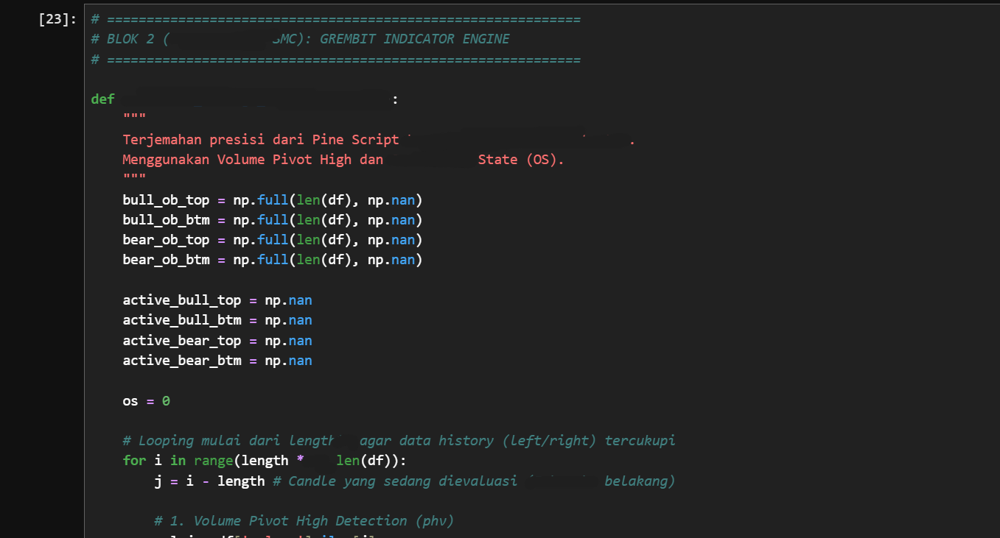

Market Inefficiency Synthesizer.
Grembit Mevers 7 merupakan kerangka kerja kuantitatif performa tinggi yang dirancang untuk menangkap inefisiensi pasar.
Multi-Tier Asset Segregation
Sistem manajemen portofolio yang secara otomatis memisahkan instrumen berdasarkan profil likuiditas dan karakteristik volatilitasnya. Sangat Autonomous dan Liquidity-Aware.

Adaptive Volatility Matrix.
Menjaga protokol preservasi modal yang sangat ketat melalui filter konfluensi. Probability-driven entry points with deep structural confirmation.
Structural Convergence:
Filter berlapis yang memvalidasi titik masuk hanya ketika geometri pasar selaras dengan batas deviasi internal.
Capital Preservation:
Protokol perlindungan modal dinamis yang menyesuaikan ambang batas pengaman berdasarkan detak jantung volatilitas pasar.
Visualization Analyst
Menggunakan metrik visual untuk menganalisa hasil output dan mengecek performa secara visual dari backtest maupun deployment.
